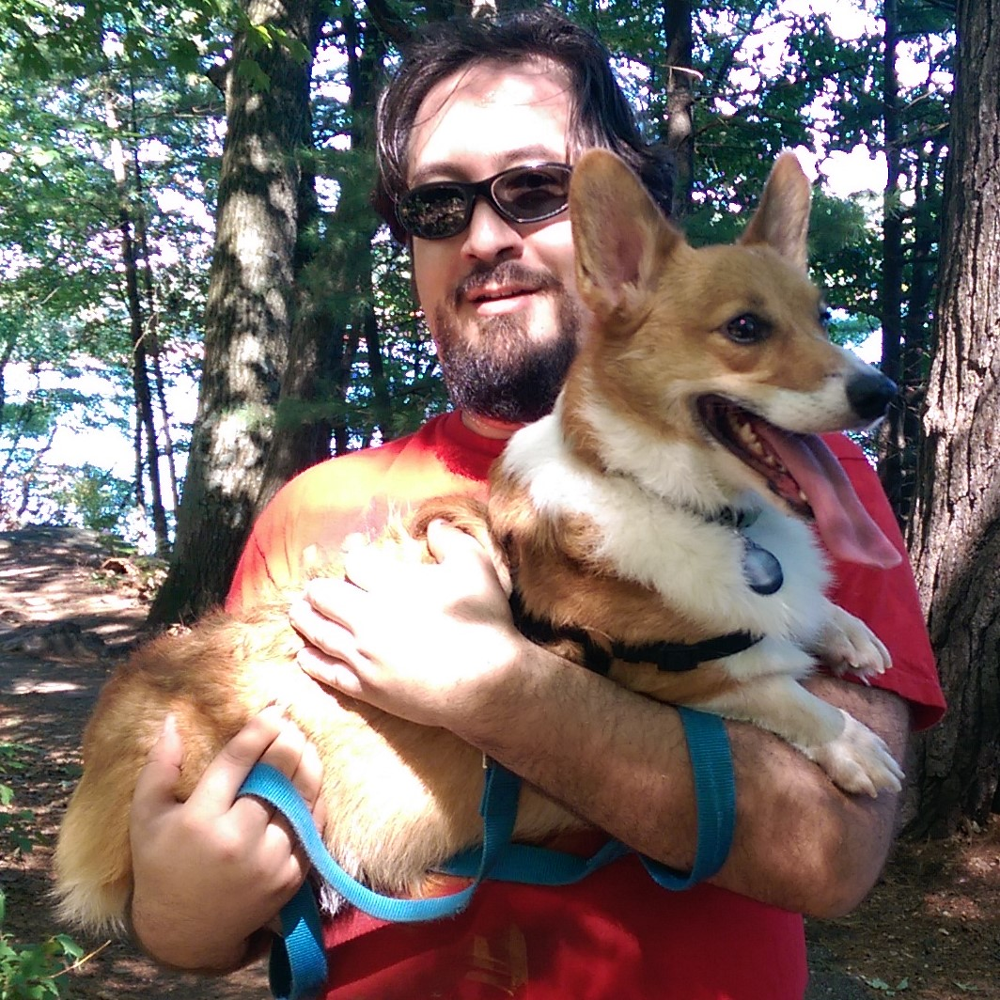
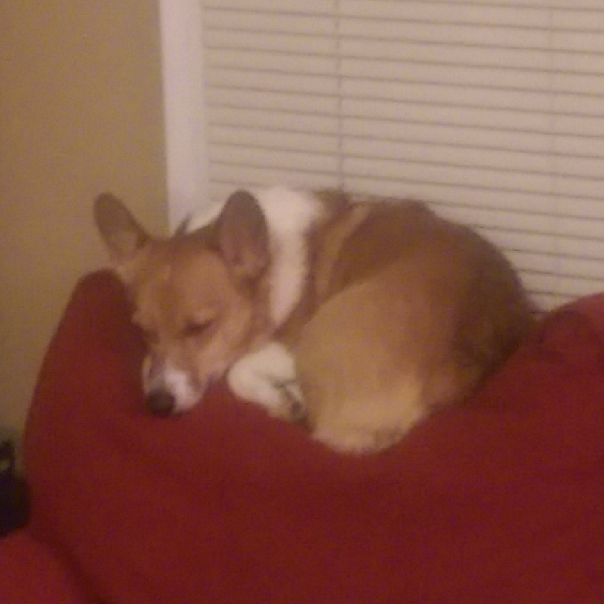
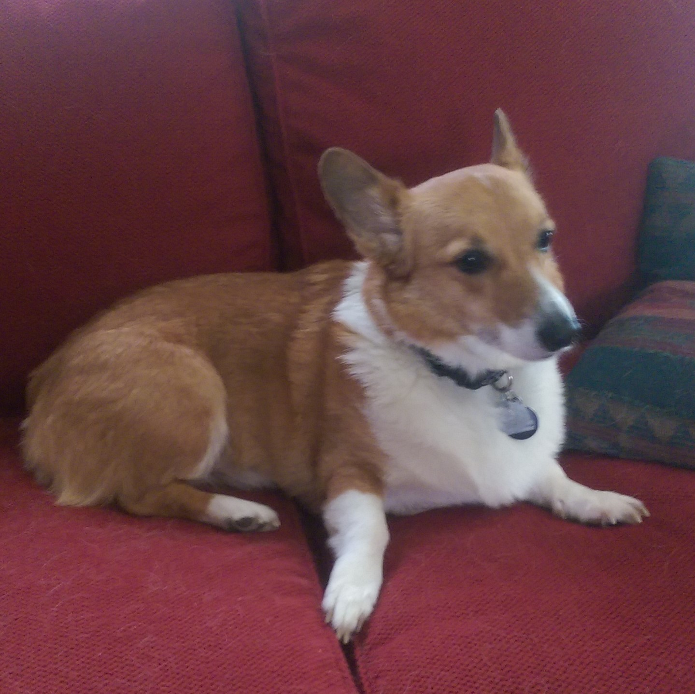
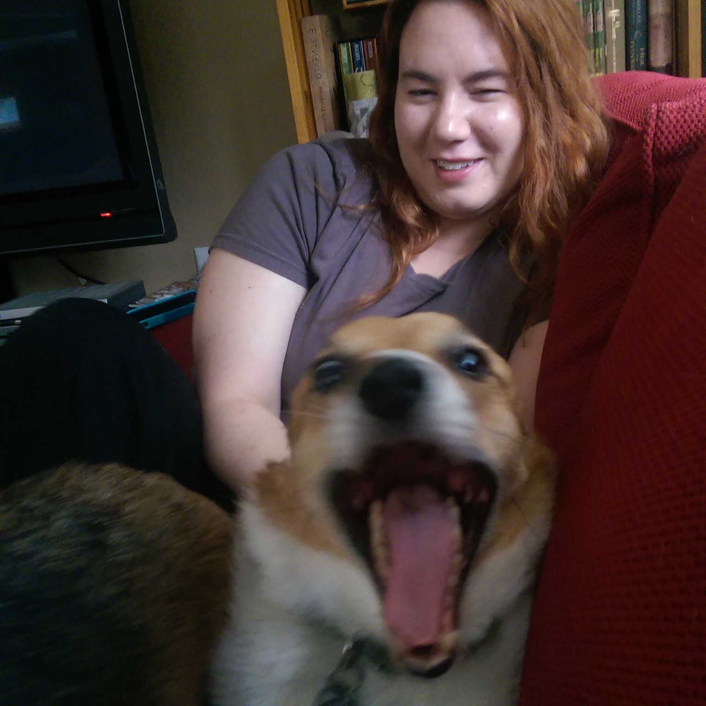

The Honeyager Dog House - End of Corgongelion:




The final of our 3 dogs, Jean-Luc. Jean-Luc is significantly smaller than his brothers, as he was the runt of his litter. He still has a runt complex, and will sometimes fight over food with his brothers, even though they get fed equally. Here is some other information about Jean-Luc:
- Jean-Luc was named for Jean-Luc Picard, Captain of the Enterprise on Star Trek: The Next Generation.
- Jean-Luc is HORRIFIED of feet. If he sees feet near him, he will shreik and run away.
- Although he is a dog, Jean-Luc often acts like a cat. Likes to be in high places, alone in the dark, wants attention only occasionally, etc...
- Has on multiple occasions turned the TV on while we've been away.
And that's all of my dogs. You can use the links to navigate back to previous pages. Thanks for visiting!
Previous Page